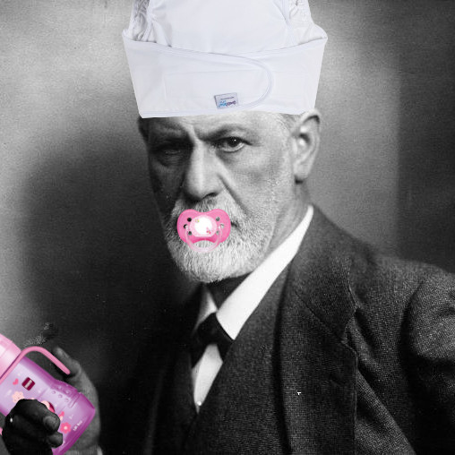

Jean-Claude Francobelge, en convalescence après un accident spectaculaire

La communauté du Wingball retient son souffle alors que l'illustre joueur français, Jean-Claude Francobelge, se remet d'un accident impressionnant survenu il y a une semaine lors d'une session de wingsuit. Le virtuose des cieux, connu pour ses manœuvres audacieuses et son agilité exceptionnelle, a été hospitalisé après un incident qui a secoué la communauté des amateurs de ce sport aérien unique.
Selon les premiers rapports, l'accident s'est produit lors d'un entraînement intensif au-dessus des Alpes françaises, où Francobelge a subi des difficultés techniques pendant une manœuvre risquée. Les témoins ont décrit la scène comme impressionnante et inquiétante, tandis que l'athlète professionnel a été rapidement transporté à l'hôpital le plus proche.
Depuis lors, des informations rassurantes ont émergé sur l'état de santé de Francobelge. Les médecins, qui ont pris en charge le cas du sportif, indiquent qu'il se trouve actuellement dans un état stable et qu'il répond bien aux traitements. Bien que l'accident ait suscité des inquiétudes, les spécialistes restent optimistes quant à une récupération complète de la star du Wingball.
L'agent de Jean-Claude Francobelge a publié une déclaration, remerciant les fans pour leur soutien inébranlable et assurant que le champion se consacrera pleinement à sa rééducation. "Jean Claude est un compétiteur acharné, et nous savons qu'il fera tout en son pouvoir pour revenir plus fort que jamais. Vos pensées positives et vos encouragements signifient énormément pour lui", a déclaré l'agent.
La communauté du Wingball, tout en reconnaissant les risques inhérents à ce sport extrême, reste unie dans l'espoir d'une récupération rapide et complète pour Jean Claude Francobelge. Les fans du Wingball du monde entier expriment leur soutien sur les réseaux sociaux avec le hashtag #ReviensPlusFortJC, témoignant de l'impact que ce talentueux athlète a eu sur la discipline et de l'esprit de solidarité qui règne parmi ses admirateurs.
Nous continuerons de suivre de près l'évolution de la situation et de vous tenir informés de tout développement majeur. En attendant, la communauté du Wingball reste unie dans l'espoir de voir bientôt le retour triomphant de Jean-Claude Francobelge dans les cieux.
Commentaires
Aurélien Il y a 12 heures Quelle joie de l'entendre ! Il est vrai que son prédecesseur est mort de la même manière, on se demandais si la tragédie allait se répéter...
killian79 Il y a 5 heures Gé neux sui pa contant 2 l'apprandre si il serai maur Téo Chio l'aurai renplacer et Téo il ai 1000000000x mieu

DrFreud Il y a 2 minutes Toux ceux qui ont du voir leur camarade si mal en point on du en souffrir... Même nous, les spectateurs avons été attristés de le voir dans un tel état. Si vous vous sentez toujours choqué de cette vision atroce, je vous conseille mes thérapies psycologiques à seulement $400 la demi heure... contactez moi vite...
Visiteur